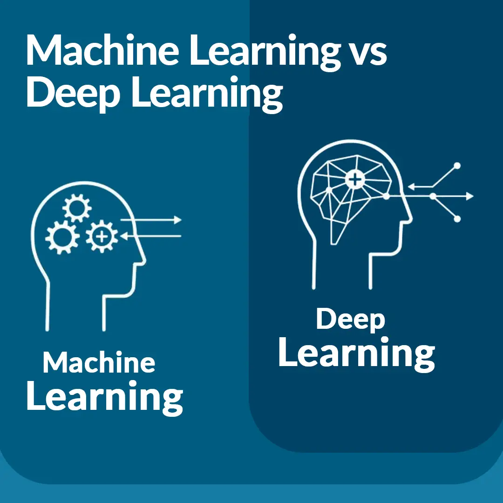
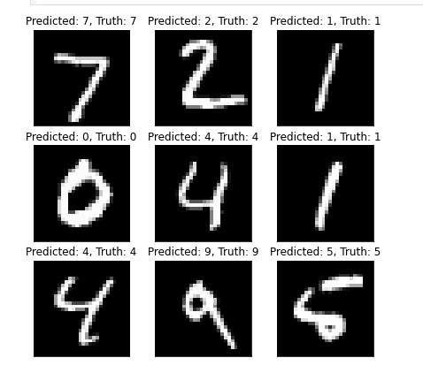

This project aims to compare cutting-edge deep learning via BERT with established traditional machine learning models for text genre classification. It aims to uncover valuable insights on optimal methodologies in this field of study.
The project aims to automate the data ingestion process using Apache Airflow

Brief intro about Ensemble Learning and why they dominate the tabular data world, Along with python code.

Sentiment analysis of text data via traditional NLP techniques vs Transformers also integration sample with DVC & MLflow.

Image classifier for MNIST dataset with least amount of parameters with 99.4% accuracy.